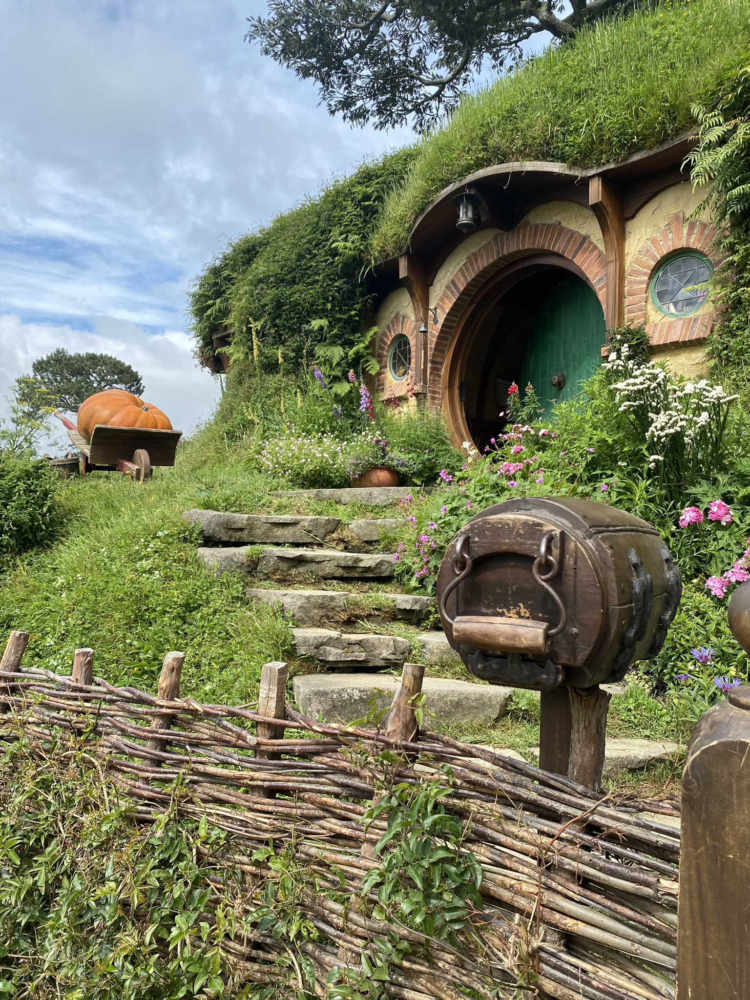
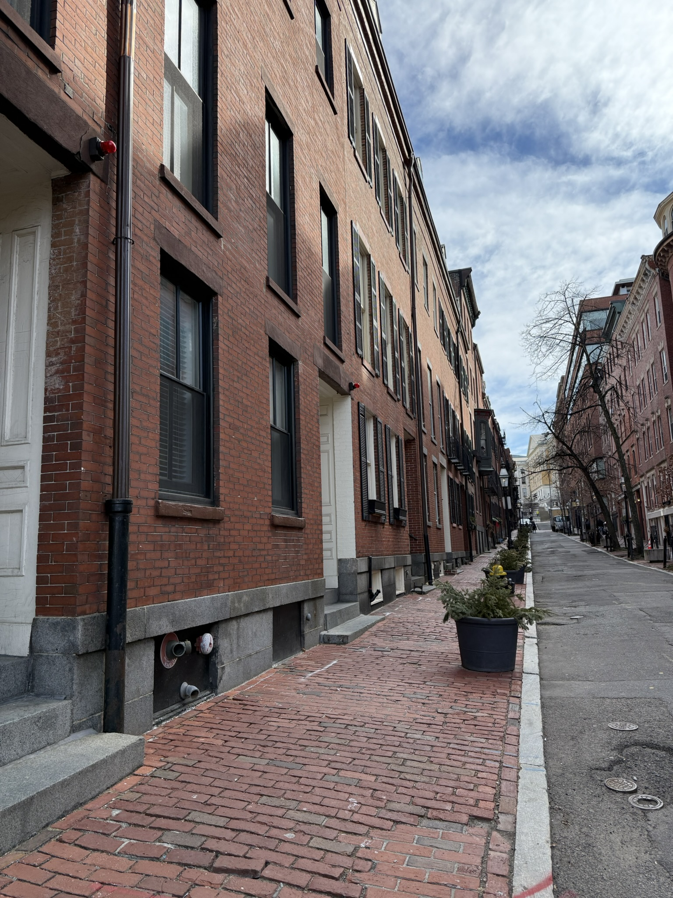
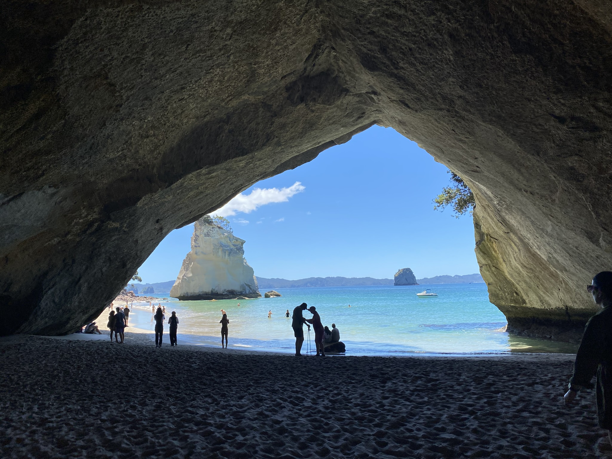
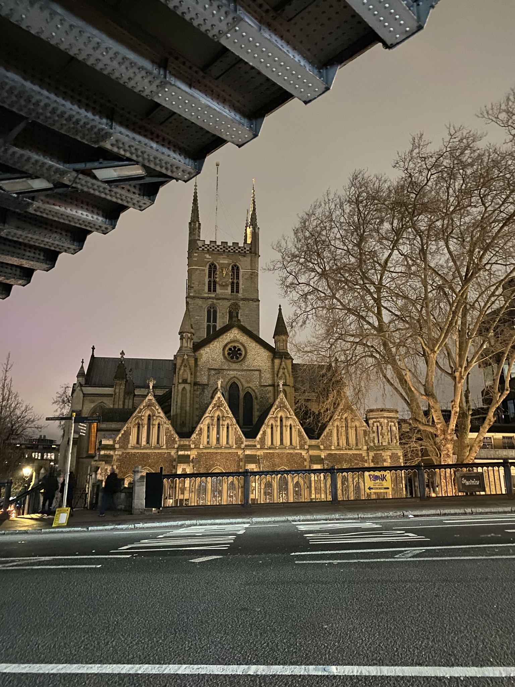
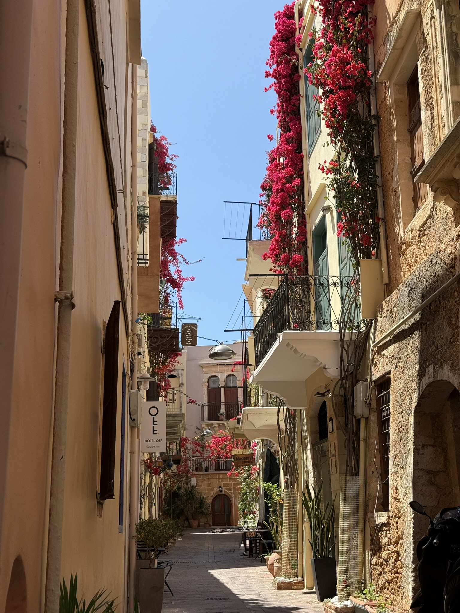
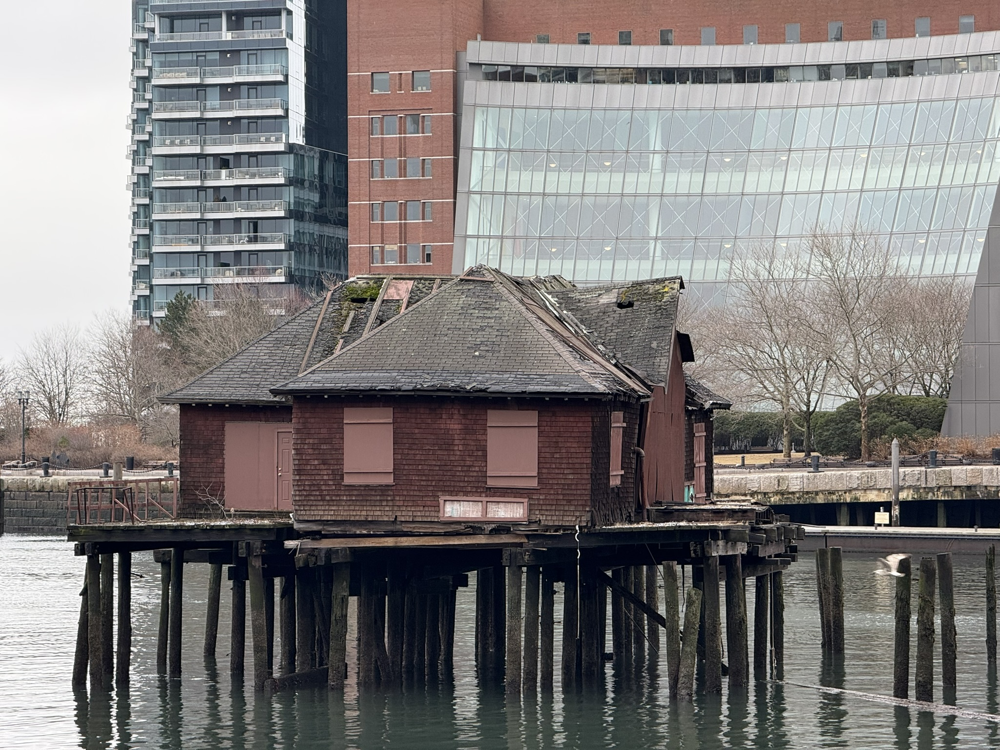
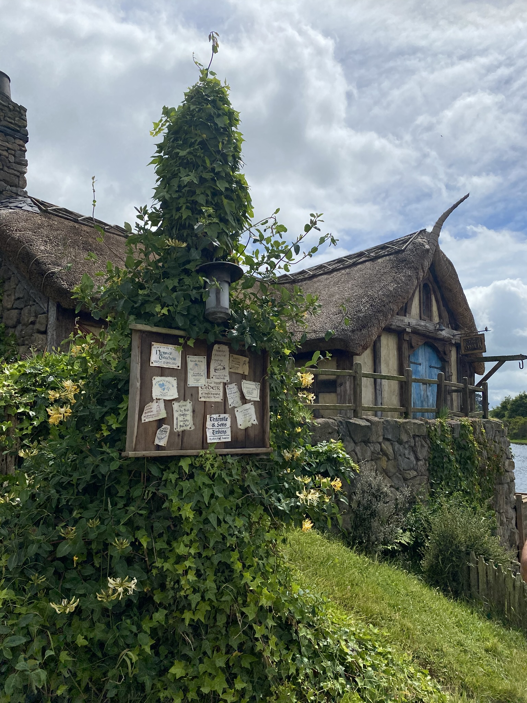
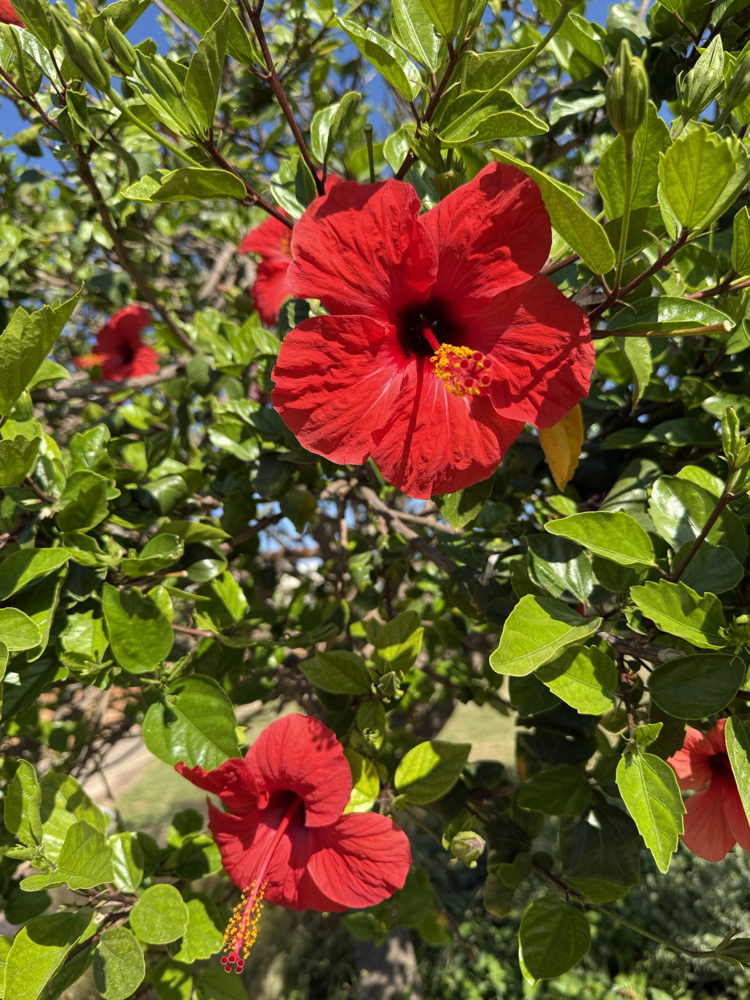
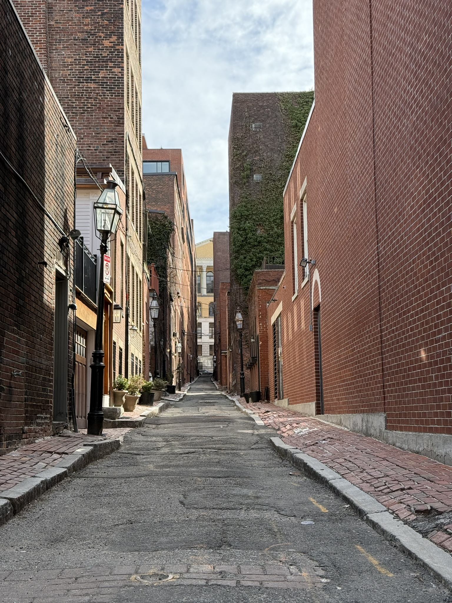
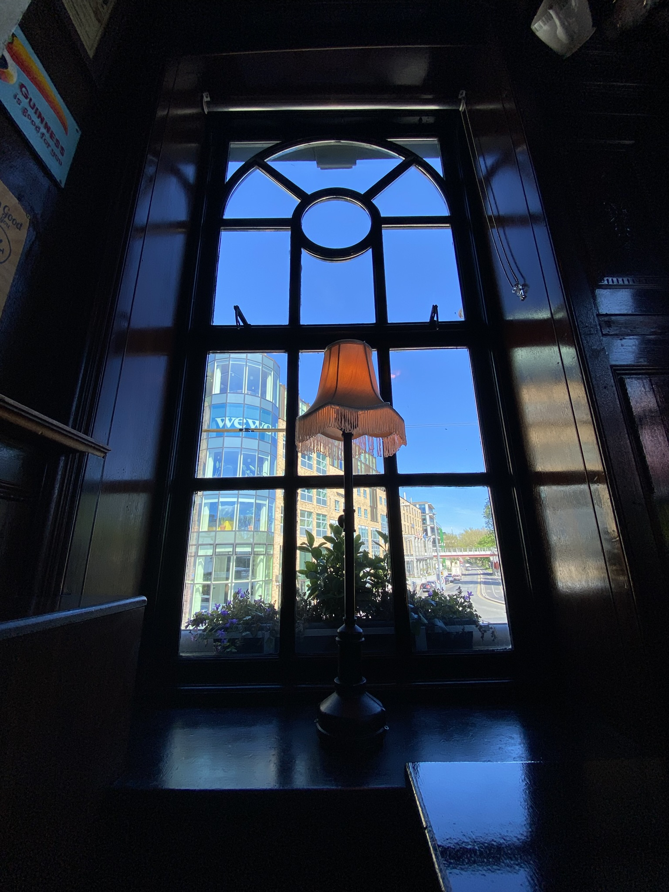

Travelling and photography
When I was a kid, I was jealous of my best
friends when they had the opportunity to travel to another country. Most of the time they were
going to Spain or Orlando with their families and for some reason I always wanted to do that
too. The first time I travelled away from Iceland was when I was 14 years old and I went to a
gymnastics camp in Norway, then later that same year I went to Denmark with my family. After
that there was no coming back, I loved going to another country, see the culture and landscape.
I travelled a little after that but it wasn't until I got out of my first relationship and
started working more with school. At that time I had tested few things in University that did
not stick and after I started working at the airport for Icelandair Ground Service, I travelled
as much as I could.
Travelling alone and with friends, it doesn't matter which, I love both. First time travelling
by myself I flew to Hawaii to visit my best friend that was in University there, later I took a
road trip from New York to LA, first two weeks I had a friend with me, the last 3 weeks I was by
myself. After that, if I wanted to go somewhere I just went, even if no one could come with me.
I have been to London, Berlin, LA, France (went to a French school in Montpellier to learn
French better) and my last solo trip was to New Zealand in December 2023. I loved every trip and
all of the other ones I took with friends and families and I make sure I take a lot of pictures
while travelling. I am more of a "take pictures of landscapes and things" person not so much
profile or just taking pictures of people.